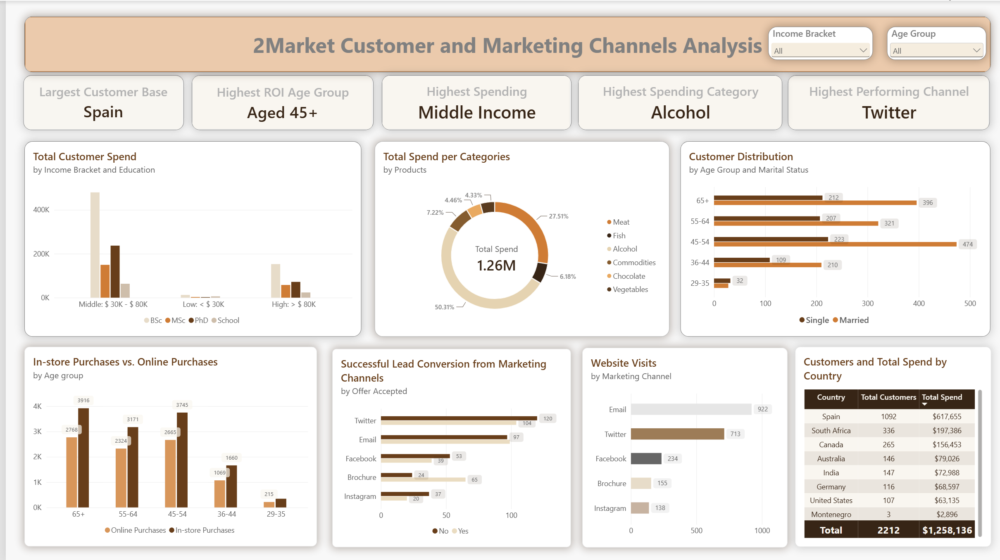

Business Context & Problem
Analysed customer demographics and marketing channel performance for 2Market to identify how the business could optimise its marketing spend and improve conversion.
Technical Execution & Tools Used
- SQL — data cleaning, aggregations, and demographic segmentation queries.
- Excel — initial exploratory data analysis and validation.
- Power BI — interactive dashboard design, DAX calculated fields, and UI structuring.
Key Business Insights & Impact
- Spend concentration: $1.26M total spend across 2,212 customers. Spain is the largest market, with 1,092 customers and $618K (49% of all spend), three times South Africa ($197K).
- Products: Alcohol accounts for 50% of spend and Meat for 28%, so two categories drive almost four-fifths of revenue.
- Customers: middle-income households ($30K–$80K) spend the most, led by BSc graduates. 45–54 is the largest age group (697 customers, two-thirds married), and customers aged 45+ give the highest return.
- Channels: Twitter brings the most successful conversions (104), and Email drives the most website visits (922, then Twitter with 713). Facebook, Brochure and Instagram trail on both.
- Purchase behaviour: in-store purchases exceed online in every age group, for example 3,916 vs 2,768 for customers aged 65+.
- Strategic recommendation: focus marketing spend on Twitter and Email, target middle-income customers aged 45+ with Alcohol and Meat offers, and deepen retention in Spain before expanding into smaller, lower-spend markets.
